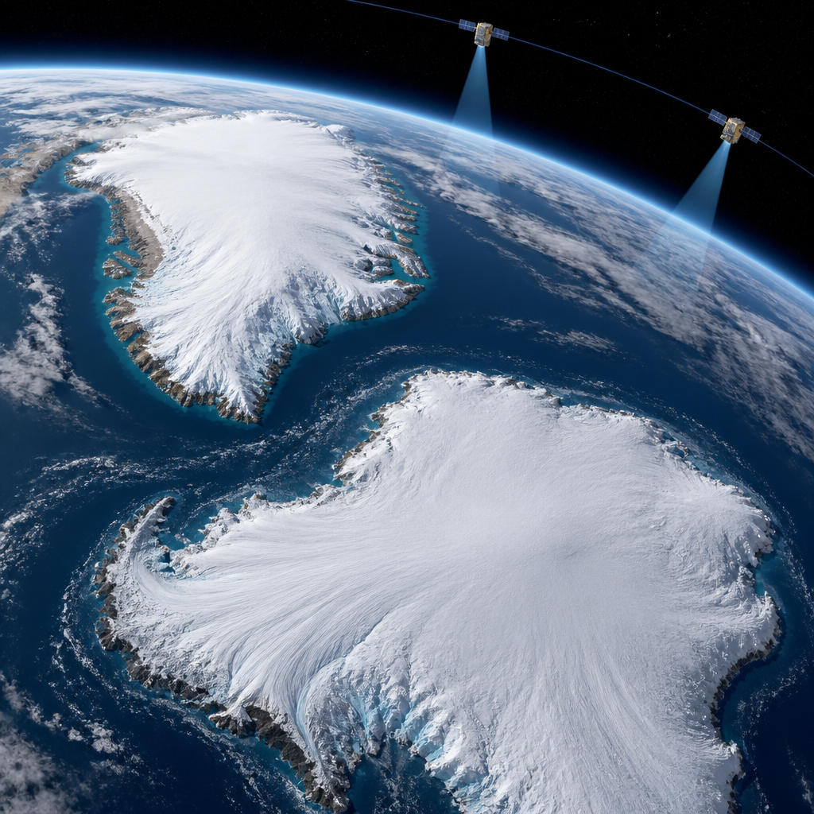
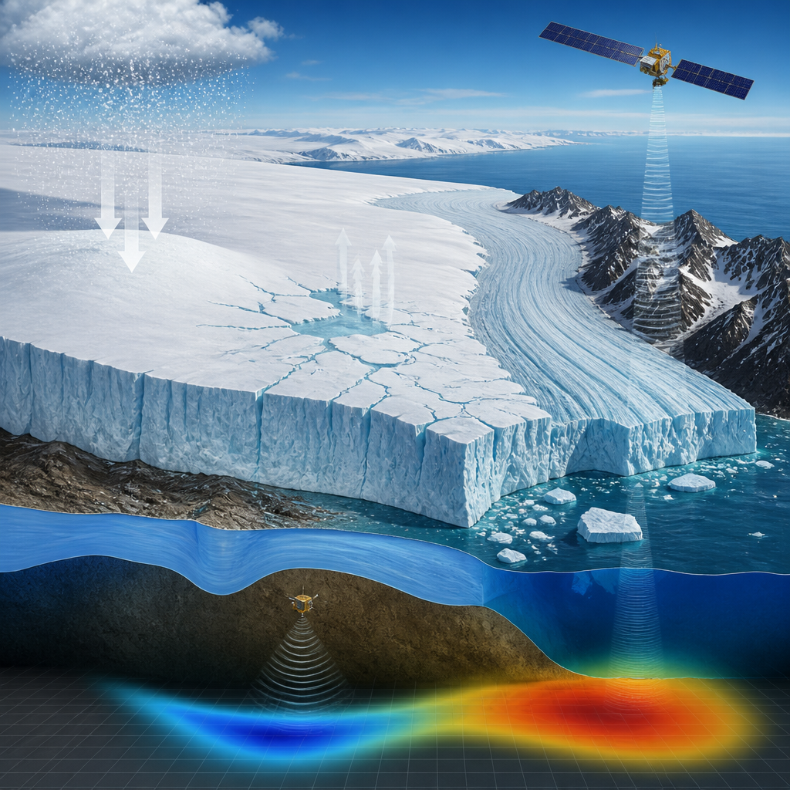

Un nuovo archivio satellitare ricostruisce mezzo secolo di cambiamenti in Groenlandia e Antartide.
Groenlandia e Antartide hanno perso insieme 11,3 mila miliardi di tonnellate di ghiaccio tra il 1979 e il 2023. La conseguenza misurata su scala globale è un aumento del livello del mare di 3,14 centimetri. Ma il nuovo bilancio basato sui satelliti mostra che il fenomeno non dipende soltanto dalla fusione sulla superficie delle grandi calotte polari: la parte principale della perdita è legata ai ghiacciai che scorrono più rapidamente e trasferiscono il ghiaccio direttamente nell’oceano.
Le calotte glaciali sono immense masse di ghiaccio che coprono terre emerse; i ghiacciai di sbocco sono invece i grandi flussi che ne trasportano il ghiaccio verso il mare. Secondo lo studio, l’84% della perdita complessiva di ghiaccio è stato causato dall’accelerazione di questi ghiacciai e dalla maggiore quantità di ghiaccio scaricata in mare. Il restante 16% è attribuito alla fusione alla superficie delle calotte.
I risultati arrivano dall’Ice Sheet Mass Balance Intercomparison Exercise, una collaborazione internazionale sostenuta da ESA e NASA. Il suo obiettivo è rendere confrontabili misure raccolte da satelliti diversi, in epoche diverse e con tecniche differenti. Il bilancio di massa è la differenza tra quanto ghiaccio una calotta guadagna e quanto ne perde: per ricostruirlo nel tempo bisogna distinguere un cambiamento reale del ghiaccio dalle differenze introdotte dagli strumenti e dai periodi di osservazione.
Alcuni strumenti spaziali misurano i cambiamenti di altezza della superficie del ghiaccio con altimetri, cioè strumenti che rilevano la distanza fra satellite e superficie. Altri osservano il campo gravitazionale terrestre, mentre sensori radar e ottici seguono la velocità di movimento dei ghiacciai. Le missioni satellitari sono inoltre cambiate molto nel corso dei decenni, con sensori, risoluzioni spaziali e tecniche di misura sempre più avanzati.

Per il nuovo record sono stati usati dati di 27 missioni satellitari, fra cui CryoSat dell’ESA, i satelliti Sentinel di Copernicus, le missioni Grace statunitensi e tedesche e le prime missioni Landsat. Il gruppo di ricerca ha analizzato 42 indagini indipendenti. La ricostruzione arriva fino al 1972 per la Groenlandia e al 1979 per l’Antartide: una continuità temporale che permette di osservare l’evoluzione delle due calotte su circa mezzo secolo.
Le perdite di ghiaccio hanno iniziato ad accelerare nettamente dagli anni Novanta. Negli anni Settanta la Groenlandia era vicina all’equilibrio, con guadagni e perdite di ghiaccio equivalenti. La sua perdita annuale è passata da circa 60 miliardi di tonnellate negli anni Ottanta a 264 miliardi di tonnellate negli anni Dieci, un decennio segnato da ripetuti episodi di fusione estiva estrema.
Anche l’Antartide ha seguito una traiettoria simile: le perdite annuali sono cresciute da circa 48 miliardi di tonnellate negli anni Ottanta a 202 miliardi negli anni Dieci. A differenza della Groenlandia, la sua perdita netta di ghiaccio è stata guidata interamente dalla fusione indotta dall’oceano e dall’accelerazione dei ghiacciai di sbocco. Nell’Antartide occidentale, lo scarico di ghiaccio è aumentato in ogni decennio del periodo satellitare, in particolare per l’accelerazione dei ghiacciai Pine Island e Thwaites.
Tra il 1979 e il 2023 la Groenlandia ha contribuito per 1,81 centimetri all’aumento globale del livello del mare e l’Antartide per 1,33 centimetri. Insieme, le due calotte sono oggi responsabili di circa un quarto dell’aumento globale del livello del mare.
Fra il 2020 e il 2023 la perdita complessiva di ghiaccio ha rallentato. In Antartide, nevicate insolitamente abbondanti nell’Antartide orientale hanno aggiunto abbastanza ghiaccio da compensare una parte delle perdite dovute ai ghiacciai in altre zone del continente. In Groenlandia, una successione di estati relativamente miti ha ridotto in modo sostanziale la fusione superficiale, dimezzando circa il ghiaccio perso attraverso questo processo.
Gli scienziati avvertono però che si tratta di variazioni di breve periodo, non di un’inversione della tendenza di lungo termine. Le calotte restano in perdita netta e le oscillazioni annuali di nevicate, temperatura e flusso dei ghiacciai possono mascherare temporaneamente il quadro più ampio. La risposta delle calotte a un clima più caldo resta inoltre la maggiore fonte di incertezza nelle proiezioni del livello del mare.
L’archivio di mezzo secolo è utile proprio perché le tendenze di lungo periodo non emergerebbero da osservazioni brevi. Unendo generazioni successive di satelliti, le misure consentono di verificare e migliorare i modelli che proiettano la futura perdita di ghiaccio e l’aumento del livello del mare. Le future missioni CRISTAL e ROSE-L dovranno contribuire a proseguire il monitoraggio dei cambiamenti rapidi che interessano le calotte.
Questo articolo l'hai letto sul blog di Meteo Radar: un'app che ti mostra da dove vengono i numeri, invece di limitarsi a dartelo. E ogni mattina ne trovi uno nuovo come questo.